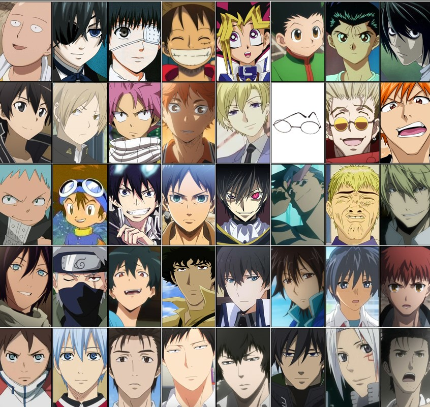

Waifu
Apa itu Waifu
WAIFU adalah istilah untuk menyebutkan istri namun penggunaanya sering disalahgunakan untuk
menyatakan istri dalam Karakter Anime 2D. Biasanya orang yang memilih WAIFU didalam karakter anime itu adalah orang yang
jones alias di dunia nyata atau memang cinta mati dengan karakter anime
Kata WAIFU merupakan plesetan dari kata bahasa inggris “Wife” yang artinya
Istri. WAIFU didefinisikan sebagai karakter perempuan dari anime, visual novel atau game yang paling disukai dan di senangi
oleh para otaku. Dipastikan juga para Otaku mempunyai WAIFU. Tentu saja ini akibat dari kegemarannya terhadap anime,
visual-novel, game atau pun yang lainnya.
Husbando
Apa itu Husbando
Sama seperti waifu, Kata husbando berasal dari bahasa inggris. Berasal dari kata "Husband", yang artinya adalah suami. Karena pengucapan bahasa inggris
di jepang sedikit terdengar berbeda dari aslinya maka kata"Husband", Terdengar seperti "Husbando".
Para wibu cewek, Biasanya menjadikan karakter cowo yang ngefeel di hati mereka sebagai pacar 2Dnya, Sama seperti waifu yang
di jadikan pacar 2D oleh para wibu cowo. Husbando adalah pacar 2Dnya para kaum wibu dan otaku cewe.
